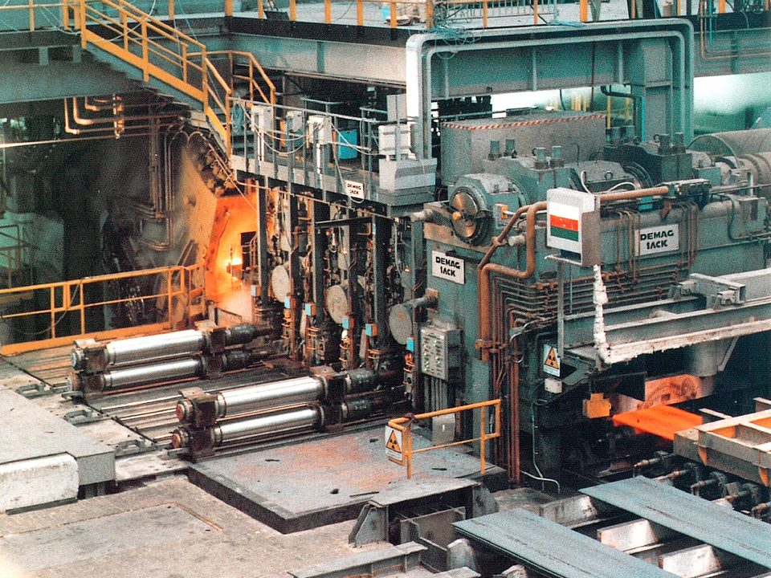
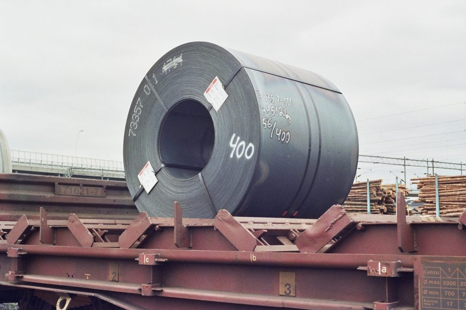
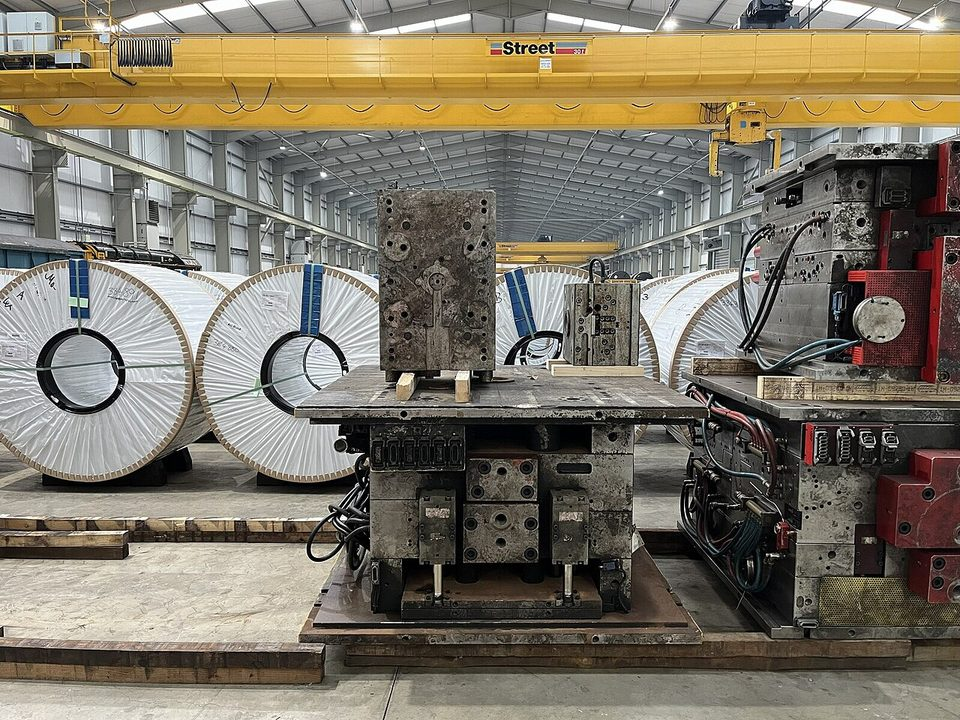

CHINA STEEL · FINANCIAL REPORT · 2025
中鋼 2025 財報分析：營收少一成二、本業轉虧，每股虧損 0.29 元
鋼鐵潮流工作室 · 發布 2026.10.06

本期重點
2025 年（民國 114 年）中國鋼材出口再創新高、達約 1.19 億噸，美國也在 6 月把鋼鐵進口關稅提高到 50%，亞洲鋼價持續低迷。中鋼合併營收 3,171.6 億元，比 2024 年減少 12.0%；毛利率降到 2.8%，營業損益由盈轉虧，虧損 39.0 億元。全年稅後淨損 35.1 億元，歸屬母公司業主淨損 43.5 億元，每股虧損 0.29 元。
- 本業：鋼鐵部門營業虧損從 76.5 億元擴大到 117.6 億元；非鋼鐵部門獲利 93.0 億元，也比前一年少。
- 存貨評價：2025 年認列存貨回升利益 22.8 億元，若排除這項評價利益，毛利只剩約 67.4 億元，不到 2024 年的一半（本站計算）。
- 業外：營業外收支由 2024 年的淨收益 27.9 億元轉為淨損 7.8 億元，股利收入減少、財務成本升到 50.5 億元。
- 現金流：存貨去化與資本支出縮減，使營業現金流 493.0 億元、資本支出 321.6 億元，自由現金流轉正。
- 股利：雖然虧損，仍以特別盈餘公積迴轉等方式配發普通股現金股利每股 0.15 元，已於 2026 年 5 月股東常會通過。
財報基本資料
| 報告期間 | 2025 年 1 月 1 日至 12 月 31 日（民國 114 年度），與 2024 年度比較 |
|---|---|
| 報表範圍 | 合併財務報告：中國鋼鐵股份有限公司及子公司。鋼鐵部門含中鋼、中龍、中鴻、中馬（馬來西亞）、中鋼住金越南（CSVC）與中鋼印度（CSCI）；非鋼鐵部門含中聯資源、中鋼鋁業、中鋼碳素、中能發電等 |
| 董事會通過 | 2026 年 2 月 26 日 |
| 簽證會計師 | 勤業眾信聯合會計師事務所 許瑞軒、柯志賢；查核意見為合併財務報表在所有重大方面允當表達 |
| 關鍵查核事項 | 鋼鐵部門商品銷貨收入認列（鋼鐵部門商品銷貨收入占營業收入七成以上） |
| 原文下載 | 中鋼 114 年度合併財務報告（PDF） |
關鍵數字
一、損益：營收少一成二，本業由盈轉虧
2025 年合併營收 3,171.6 億元，比 2024 年減少 433.8 億元、12.0%；營業成本 3,081.3 億元，只減少 10.8%。成本降幅小於營收，毛利從 150.6 億元降到 90.3 億元，毛利率 2.8%。營業費用 129.3 億元，比前一年略減，但已超過毛利，營業損失 39.0 億元，營業利益率 −1.2%。
營業外收支也轉為淨損 7.8 億元，稅前淨損 46.8 億元；認列所得稅利益 11.8 億元後，本期淨損 35.1 億元。由於子公司整體仍有獲利，其中歸屬其他股東的 8.4 億元要另外扣除，歸屬中鋼股東的淨損因此擴大到 43.5 億元，每股虧損 0.29 元。
和 2024 年相反，2025 年的存貨評價是「加分」：先前導致存貨淨變現價值低於成本的因素消失，部分跌價損失迴轉，認列存貨回升利益 22.8 億元，減少營業成本。2024 年則是跌價損失 15.9 億元。排除這個因素後，2025 年毛利約 67.4 億元，2024 年約 166.5 億元，衰退幅度比帳面數字更大。另一方面，2025 年提列虧損性合約負債準備 13.5 億元、工程保固負債準備 14.7 億元，2024 年則是迴轉虧損性合約準備 29.3 億元，兩年的估計變動方向也相反。
二、部門：鋼鐵部門虧損擴大，非鋼也縮水
鋼鐵部門 2025 年對外營收 2,362.9 億元，比 2024 年減少 15.5%，占合併營收 74.5%；部門營業虧損從 76.5 億元擴大到 117.6 億元。非鋼鐵部門對外營收 808.6 億元，與前一年持平，部門利益則從 100.9 億元降到 93.0 億元。
鋼鐵部門的稅後虧損從 77.4 億元擴大到 147.3 億元：本業多虧 41.0 億元，權益法投資損失也從 9.6 億元擴大到 46.4 億元。非鋼鐵部門稅後淨利 112.6 億元，比前一年少 37.9 億元，主要是其他營業外收支、權益法投資收益減少，財務成本則從 14.2 億元增加到 23.7 億元。

三、地區：多數據點營收下滑
依營運地點區分，台灣營收 2,800.0 億元，比前一年減少 12.2%，占合併營收 88.3%。海外據點中，越南營收 190.6 億元，減少 12.9%；中國 31.2 億元，減少 28.6%；馬來西亞 96.8 億元，減少 5.3%；印度 42.9 億元，是唯一成長的主要據點，增加 4.8%。
四、業外：由賺轉賠
2024 年業外收益是撐住獲利的關鍵，2025 年則轉為拖累。營業外收支淨損 7.8 億元：股利收入從 24.3 億元降到 15.1 億元，淨匯兌利益從 11.1 億元降到 6.4 億元，權益法投資利益只剩 2.0 億元；財務成本則增加 10.1 億元到 50.5 億元。財務成本增加的原因之一，是資本化的利息從 12.1 億元降到 6.4 億元，更多利息直接列為費用；全年利息費用總額 56.9 億元，比 2024 年的 52.6 億元增加 4.3 億元。
五、資產負債：存貨再降，長債比重上升
2025 年底資產總計 6,738.5 億元，比前一年底減少 3.1%。存貨再減少 151.9 億元到 924.9 億元，兩年合計減少 278.6 億元；不動產、廠房及設備減少 71.0 億元，資本支出低於當年折舊 325.5 億元。負債總計 3,439.3 億元，負債比率 51.0%；權益總計 3,299.2 億元，其中歸屬母公司業主 2,926.3 億元，減少 2.9%。
借款總額大致持平，結構則繼續拉長：短期借款從 361.7 億元降到 309.3 億元，長期應付票券從 492.3 億元降到 424.6 億元，銀行長期借款則從 714.2 億元增加到 852.7 億元。流動負債從 1,469.4 億元降到 1,289.5 億元，流動比率由 131% 升至 138%。
六、現金流：虧損年現金流反而增加
2025 年雖然虧損，營業活動淨現金流入卻增加到 493.0 億元，比 2024 年多 70.3 億元。主要來源是折舊 325.5 億元這類不需付現的費用，以及存貨減少釋出的 173.6 億元現金。投資活動淨流出降到 319.6 億元，其中購置不動產、廠房及設備 321.6 億元，比前一年少 106.1 億元。營業現金流減去資本支出約 171.4 億元（本站計算），用於支付利息、股利與償還借款，籌資活動淨流出 158.8 億元。

七、股東報酬
2025 年歸屬母公司業主淨損 43.5 億元，以平均業主權益計算的股東權益報酬率約 −1.5%（本站計算）。雖然虧損，董事會仍擬議以特別盈餘公積迴轉 15.6 億元等來源，配發普通股現金股利每股 0.15 元、特別股每股 1.40 元，普通股股利約 23.4 億元，已於 2026 年 5 月 22 日股東常會通過。圖中四個年度的每股股利逐年下降。
分析觀點
- 2025 年營收減少 433.8 億元，其中 429.3 億元來自鋼鐵產品；鋼鐵部門營業虧損一年擴大 41.0 億元。
- 帳面毛利 90.3 億元還包含 22.8 億元的存貨回升利益，排除後的本業獲利能力比數字看起來更弱。
- 2024 年靠業外與非鋼事業撐住獲利，2025 年兩者都轉弱：業外由賺轉賠，非鋼部門利益也下滑，無法再抵銷鋼鐵本業的虧損。
- 資金面反而改善：資本支出降到折舊以下、存貨持續去化，營業現金流足以支應資本支出與股利，流動比率回升到 138%。
- 財務成本 50.5 億元，相當於毛利的五成以上；在本業獲利恢復前，利息負擔是不可忽視的壓力。
延伸閱讀
資料來源
- 中國鋼鐵股份有限公司及子公司 114 年度及 113 年度合併財務報告暨會計師查核報告（中鋼，2026-02）
- GACC: China's steel exports in '25 hit record high of 119 million t（Mysteel，2026-01）
- President Trump Hikes Section 232 Steel and Aluminum Tariffs to 50 Percent（Kelley Drye，2025-06）
- 中鋼股東常會決議 114 年度盈餘分配（yam 蕃新聞，2026-05-22）
- 中鋼投資人關係：財務報告（中鋼）
本文為財務報告重點整理與觀點，數字以中鋼原文為準，金額由千元換算為億元並四捨五入；標示「本站計算」者為依原文數字換算。內容僅供產業資訊參考，不構成投資建議。